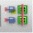

Generating a Soft Block for a Virtual Hierarchy
For symbol blocks that have missing schematic or a schematic that has pins but no instances or physical binding, the Design Planning and Analysis tool generates a soft block. To generate a soft block for a virtual hierarchy:
-
In Virtuoso Layout Suite EXL, invoke the Design Planner toolbar.
The Design Planning toolbar displays. -
Click the Generate All From Source (
) toolbar button.
The Generate Layout form displays, with the Virtual Hierarchy and Auto Generate Soft Blocks check boxes already selected. You can use thegenerateVirtualHierarchyandgenerateSoftBlocksenvironment variables to control the default values of the fields.
In the PR Boundary tab, the Virtual Hierarchy Area Boundary and the Soft Block group boxes are now enabled. -
In the Virtual Hierarchy Area Boundary group box, choose from Enclose by or Utilization (%) to specify how the area boundary for the virtual hierarchy is created.
If choosing Enclose by, type a value in the adjacent field to specify the distance from the objects inside the virtual hierarchy at which the area boundary is created. Alternatively, set theareaBoundaryEnclosureenvironment variable.
If choosing Utilization (%), type a value in the adjacent field to specify the acceptable area utilization percentage for deriving the size of the area boundary for the virtual hierarchy. This is automatically set to the same utilization percentage as the PR Boundary. Alternatively, set the Layout XLinitUtilizationenvironment variable. - Choose the appropriate hierarchy level for which the area boundary settings must be applied.
- In the Area field, type a value to specify the area of the soft blocks to be created.
-
Click OK.
The Design Planning and Analysis tool generates layout components from scratch for the selected schematic source.
Related Topics
Return to top